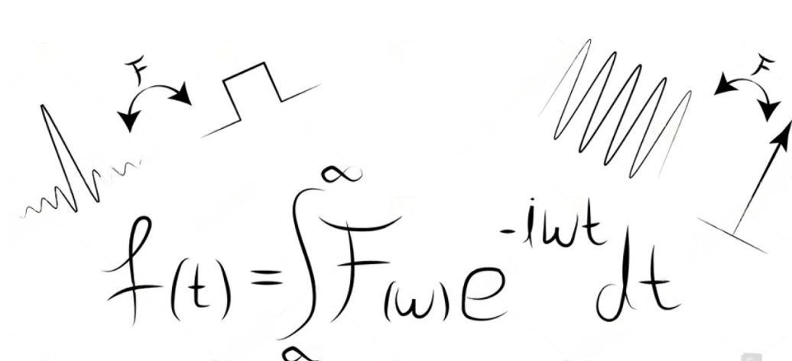

ÁREAS DE INTERES:
Vibraciones Mecánicas

Data Science

Soy profesional en ingeniería mecánica,
estudiante de Maestría en Ingeniería Mecánica en la Universidad Nacional de Colombia.
Poseo experiencia en análisis de datos para aplicación en Mantenimiento y
Gestión de activos, Construcción de modelos de clasificación y predicción para
el análisis de vibraciones.
Poseo experiencia en el sector de Gas Natural y transporte de combustibles.
Me he desempeñado como Docente ocasional en la Universidad Nacional de Colombia Sede Medellín, para el departamento de Ingeniería Mecánica, También he participado como profesional asistente en la asignatura de Transferencia de Calor, y las asignaturas vinculadas al
laboratorio de Máquinas y Sistemas Térmicos de la mencionada institución.